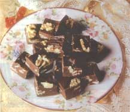
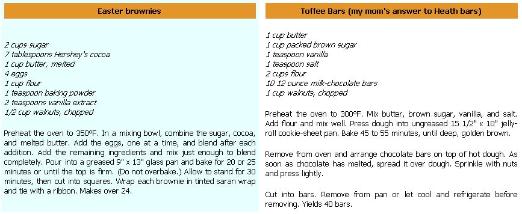
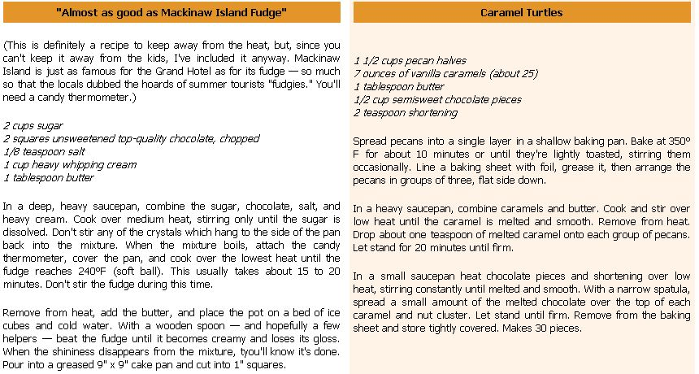

The Goody Basket
April/May 1992
MOTHER'S KITCHEN
by Mary Karenou
The worst Easter I ever experienced was when my mother hid my Easter basket in the planter. Shaped like a double-measure jigger, my mother's fern sat proudly on top of it and, well, nothing usually sat under the planter - until that Easter Sunday.
After hours of exhaustive searching and frustration, I was in tears as I ran around the house for what seemed like the millionth time, resorting to such desperate measures as looking inside boots. Taking pity on me - a sympathetic gesture, as I fancied myself to be a varsity-level Easter-basket hunter and was quite cocky about the whole matter - my mother played hot and cold until I finally had no other choice than to lift the planter and discover my basket sitting pretty in the lower half.
We learned two important lessons:
never overestimate the frustration
level of your child or the quality of
store-bought treats when creating
the ultimate goody basket.
After spending the better part of the morning near the floor heaters, my chocolate bunny resembled fondue, and the jelly beans had melted into a technicolor ooze that all but caulked the cracks of the basket's rattan. The only standing survivors of my Three Mile Island basket were the mallow chicks, confections so resilient they could probably survive a full-scale nuclear meltdown.
Anyway, we learned two important lessons that Easter: One is never overestimate the frustration level of your child (although I'm sure my mother got a slight kick out of reducing this overly-confident nine-year-old to a foot-stamping, red-eyed teary mess in a dress), and two, never overestimate the quality of store-bought treats when creating the ultimate goody basket.
Granted, most people don't take Easter baskets quite as seriously as we did, but the following recipes are not only refreshing alternatives to the usual splendor in the grass, they're guaranteed to last hours under a planter.
|
 |
 |
 |
|
 |
|
|